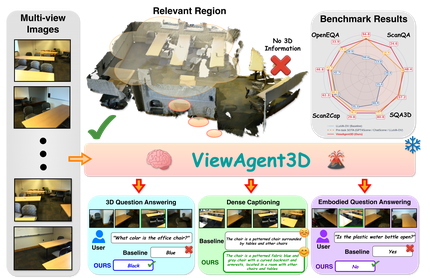

My research sits where Perception, Robotics, and Generative AI meet. I build world models for agents — systems that reconstruct, simulate, and reason about complex environments, and then act within them. That goal runs through my work on 3D scene reconstruction, generation and understanding, uncertainty-aware perception, alignment and reasoning for vision-language models, and human and scene modeling from real-world observations.
I am always open to new collaborations and research ideas. Feel free to reach out if you are interested in working together!
🔥News
NEW!! Nov '26 : RecallWorld is out: persistent embodied video world models 🧠 NEW!! Nov '26 : DreamTour is out: training free world exploration 🌍 NEW!! Nov '26 : Looking Right Is Not Being Right is out: evaluating the geometry of agent-built 3D scenes 📐 Aug '26 : VALOR accepted to EMNLP Findings 2026! See you in Budapest! 🏰 Aug '26 : This summer/fall, I will be joining Amazon Science as an Applied Scientist Intern! Jul '26 : Reviewing for ACL ARR and AAAI'27. May '26 : Our new work on post-training VLMs for visual alignment done at NEC: VALOR is online, check it out! 🚀 Mar '26 : Reviewing for ECCV'26, NeurIPS'26 and Trans. on Medical Imaging (TMI). Jan '26 : Received travel grant to attend WACV'26, see you there! Nov '25 : VisOR accepted to WACV 2026! See you in Tucson! 🌵 Oct '25 : Serving as a reviewer for CVPR 2026 Sep '25 : Received Travel Grant to attend ICCV 2025! Aug '25 : Passed my qualifying exam, officially a PhD Candidate now! Jun '25 : 2 papers on 3D scene reconstruction/avatars accepted to ICCV 2025! See you in sunny Hawaii 🏝️ Jun '25 : I will be interning with NEC Labs over the summer! Apr '25 : Received Travel Grant to attend CVPR 2025! Apr '25 : Serving as a reviewer for IJCV Mar '25 : SHIFT accepted to CVPR ABAW 2025! Feb '25 : Serving as a reviewer for IROS 2025 Feb '25 : Paper accepted to CVPR 2025! Nov '24 : Serving as a reviewer for ICRA 2025 Oct '24 : Serving as a reviewer for ICLR 2025 Dec '23 : Started the CRIS Colloquium, check it out here Oct '23 : Serving as a reviewer for ICASSP 2023 Aug '23 : I will be joining UC Riverside for my PhD! Jun '23 : SoccerKDNet accepted to Springer PReMI 2023! Mar '23 : Joined Siemens as a research engineer intern! Jan '23 : Serving as a reviewer for MLRC'23
Sarosij Bose, Gitika Karumuri, Chenqi Li, Allen Tu, Srikumar Sastry, Mellon Zhang, Avinash Ravichandran, Alexander Schwing, Konstantinos Karydis, Amit K. Roy Chowdhury
arXiv, 2026
Equip video world models with persistent episodic memory, storing past views as 3D Scenelets and retrieving them on revisits so scenes keep their geometry and appearance when an agent returns.
Video world models generate plausible novel views but often lack persistent memory, failing to preserve a place's geometry and appearance when an agent revisits a scene. A central challenge is how previous views should be effectively used for creating memory. Reconstructing them independently underutilizes geometric constraints between nearby views, while repeatedly reconstructing a growing history can propagate later prediction errors into earlier geometry. We introduce RecallWorld, a persistent embodied video world model that jointly reconstructs short multi-view episodes into Scenelets while keeping geometry independent across episodes. Starting from a single source image, camera-aware ray lifting places perspective and native fisheye images in a common world frame, retaining wide-field content for perspective generation. Each generated segment extends the Scenelet memory and conditions subsequent generation. Coverage-based retrieval selects complementary Scenelets from the full history, while target-view visibility is resolved geometrically before appearance fusion, providing consistent memory conditioning for guiding subsequent generation. Across four datasets, RecallWorld improves revisit PSNR over the strongest evaluated baseline by 2.6 dB on partial revisits and 3.9 dB on full cycles, demonstrating substantially stronger preservation of scene identity across exploration and return.
@misc{Bose2026RecallWorld,
author = {Bose, Sarosij and Karumuri, Gitika and Li, Chenqi and Tu, Allen and Sastry, Srikumar and Zhang, Mellon and Ravichandran, Avinash and Schwing, Alexander and Karydis, Konstantinos and {Roy Chowdhury}, Amit K.},
title = {{RecallWorld}: Episodic Memory for Persistent Embodied Video World Models},
year = {2026},
eprint = {2611.28666},
archivePrefix = {arXiv},
primaryClass = {cs.CV},
url = {https://recallworld.github.io/}
}
Steer video diffusion and world models along any camera path without changing a single weight, using a layout guide outpainted from one image and reprojected with depth.
Video diffusion and world models generate plausible videos but do not reliably match the requested camera direction and travel distance. We present DreamTour, a training-free framework that generates camera tours from a single image with more accurate control over camera motion. DreamTour first uses a frozen image inpainting prior to extend the photograph beyond its original field of view while preserving the input pixels. Depth-based rendering of this extended scene along the requested camera path produces approximate target views that serve as spatial guidance. We introduce Layout Steering, which aligns early video latents with these views through decaying low-frequency corrections, leaving later denoising to refine appearance and dynamics. For longer tours, we autoregressively generate the video segments, repeating guidance construction from each segment's final frame to maintain camera control across the full trajectory. DreamTour improves directional accuracy and travel calibration on VBench while maintaining competitive video quality. On WorldScore, it strengthens camera control and scene consistency across chained movements. Together, these results demonstrate that training-free spatial guidance enables more accurate and consistent camera control in pretrained video diffusion and world models.
@misc{dreamtour2026,
title = {DreamTour: Layout Steering for Training-Free World Exploration},
author = {Sastry, Srikumar and Karumuri, Meher Gitika and Li, Chenqi and Bose, Sarosij and Zhang, Mellon and Tu, Allen and Long, Ziyang and Lin, Yen-Liang and Schwing, Alexander and Jacobs, Nathan},
year = {2026},
url = {https://dreamtourls.github.io/}
}
Ziyang Long, Yen-Liang Lin, Shifan Zhu, Allen Tu, Meher Gitika Karumuri, Chenqi Li, Srikumar Sastry, Sarosij Bose, Mellon M. Zhang, Hsin-Jung Yang
arXiv, 2026
Evaluate agent-built 3D scenes against laser scans of 30 real rooms, showing that convincing renders hide large geometric errors and that a geometric error report helps agents correct their scenes.
Vision-language agents can reconstruct rooms from video as editable 3D scenes, but convincing renders do not establish geometric accuracy. We introduce a scan-referenced evaluation and use controlled experiments to study reconstruction accuracy, the role of geometric inputs, and agents' ability to verify and correct their scenes. Our geometric score measures surface, depth, and furniture placement agreement with laser scans of 30 real rooms on a 0-100 scale. The strongest tested agent, GPT-6 Astra, scores 51.4 from video alone, while a dense reconstruction from the same video scores 75.9. Given the point cloud used for that reconstruction, Astra produces an editable scene that scores within three points of it. Agents also inherit input errors: rescaling the supplied geometry changes scene scale almost proportionally. During revision, viewing renders improves appearance more consistently than geometry. Logs of their tool calls show that agents repeatedly measure their inputs but rarely compare them with the scenes they build. To provide this missing check, we introduce a geometric error report that compares each saved scene with the agent's input points and lists the largest discrepancies. Without new geometric evidence, the report raises the revision gains of GPT-6.1 Terra and Sol by 3.9 and 5.5 points over concurrent controls.
@misc{long2026lookingrightnotbeingright,
title={Looking Right Is Not Being Right: Evaluating the Geometry of Agent-Built 3D Scenes},
author={Ziyang Long and Yen-Liang Lin and Shifan Zhu and Allen Tu and Meher Gitika Karumuri and Chenqi Li and Srikumar Sastry and Sarosij Bose and Mellon M. Zhang and Hsin-Jung Yang},
year={2026},
eprint={2611.26937},
archivePrefix={arXiv},
primaryClass={cs.CV},
url={https://arxiv.org/abs/2611.26937},
}

ViewAgent3D: A Training-Free Multi-View Pipeline for 3D Scene Understanding
NEW!!
Sarosij Bose, Arindam Dutta, Konstantinos Karydis, Amit K. Roy Chowdhury
arXiv, 2026
Select a small, query-conditioned subset of multi-view images so that 3D scene understanding becomes answerable with no training and no explicit 3D representation.
3D scene understanding tasks are often approached by building explicit 3D scene representations or by training specialized multi-modal models over point clouds, voxels, or scene graphs. We take a complementary view: for many queries, the main bottleneck is not the absence of a stronger 3D representation but the selection of a small subset of multi-view RGB views that actually makes the query answerable. We present a training-free, query-conditioned multi-view pipeline that performs diverse tasks using only 2D images and a set of tools used purely for inference. Our method first decomposes each query into a set of concepts that identify unique attributes that assist with reasoning. This drives a coarse-to-fine evidence selection process: a coarse retrieval selects and scores all views, a diversity-aware selector reduces redundancy, and a reranking stage helps shortlist views by target visibility or answerability. The resulting evidence is optionally grounded for queries that benefit from explicit localization, and a self-verification step helps refine the final response, especially for open-ended cases. Despite using no task-specific training and no explicit 3D representations at inference time, our approach provides 10% gain on 3D VQA and 5% gain on dense captioning and Embodied QA while being applicable across different scenarios. We further propose a unique judge-based evaluation system, motivating a judge who takes into account many semantically correct or partially correct answers, thereby improving holistic scene understanding.
@misc{bose2026viewagent3dtrainingfreemultiviewpipeline,
title={ViewAgent3D: A Training-Free Multi-View Pipeline for 3D Scene Understanding},
author={Sarosij Bose and Arindam Dutta and Konstantinos Karydis and Amit K. Roy Chowdhury},
year={2026},
eprint={2611.28673},
archivePrefix={arXiv},
primaryClass={cs.CV},
url={https://arxiv.org/abs/2611.28673},
}
Rohit Kundu, Arindam Dutta, Sarosij Bose, Athula Balachandran, Amit K. Roy-Chowdhury
arXiv, 2026
Steer the internal representations of video diffusion models at inference time, redirecting unsafe generations toward safe alternatives without any fine-tuning or weight updates.
Open-weight video diffusion models can generate photorealistic unsafe content, from violence to misinformation, yet existing defenses either require expensive safety fine-tuning that degrades general capability, or apply external filters that are trivially bypassed by adversarial prompts. We present REINS (REpresentation-space INference-time Safety steering), a training-free method that aligns video diffusion models at inference time by steering their internal representations toward safe generation. Our key finding is that safety-relevant structure is linearly encoded in the hidden-state activations of video diffusion transformers, and a single direction, discovered via Supervised PCA on binary safety labels, suffices to separate safe from unsafe generation trajectories. At inference, adding this direction to hidden states at an intermediate transformer layer redirects generation from harmful content to semantically related safe alternatives, with no weight updates, no concept enumeration, and negligible computational overhead. Through mechanistic analysis, we reveal that while safety information accumulates monotonically with transformer depth, steering effectiveness peaks at intermediate layers (~50% depth), exposing a fundamental tradeoff between information availability and downstream propagation capacity. We evaluate REINS across 9 video diffusion models, multiple parameter scales (1.3B-5B), and both text-to-video and image-to-video generation, to our knowledge, the broadest safety evaluation suite in the video generation literature.
@misc{kundu2026pullingreinstrainingfreesafety,
title={Pulling The REINS: Training-Free Safety Alignment of Video Diffusion Models via Representation Steering},
author={Rohit Kundu and Arindam Dutta and Sarosij Bose and Athula Balachandran and Amit K. Roy-Chowdhury},
year={2026},
eprint={2606.17257},
archivePrefix={arXiv},
primaryClass={cs.CV},
url={https://arxiv.org/abs/2606.17257}
}
Sarosij Bose, Ravi K. Rajendran, Biplob Debnath, Konstantinos Karydis, Amit K. Roy-Chowdhury, Srimat Chakradhar
Conference on Empirical Methods in Natural Language Processing (EMNLP), Findings 2026
Align medical vision-language models with both clinical text quality and image-level visual evidence, producing grounded, faithful radiology reports without preference pairs or retrieval.
VALOR improves grounded radiology report generation by aligning medical vision-language models with both clinical text quality and image-level evidence. The method combines clinically informed textual reasoning with self-supervised visual reasoning from a frozen domain expert, steering report generation toward semantically complete and visually faithful outputs without requiring preference pairs, retrieval databases, or additional annotations.
@article{bose2025visual,
title={Visual Alignment of Medical Vision-Language Models for Grounded Radiology Report Generation},
author={Bose, Sarosij and Rajendran, Ravi K. and Debnath, Biplob and Karydis, Konstantinos and Roy-Chowdhury, Amit K. and Chakradhar, Srimat},
journal={arXiv preprint arXiv:2512.16201},
year={2025}
}
Arindam Dutta, Sarosij Bose, Rohit Kundu, Calvin Khang-Ta, Saketh Bachu,
Konstantinos Karydis, Amit K. Roy Chowdhury
IEEE/CVF Winter Conference on Applications of Computer Vision
(WACV), 2026
Adapt human pose estimation to occluded target domains without labels, combining visibility-guided self-supervision with a mean-teacher framework to keep predictions anatomically plausible.
Occlusions are a significant challenge to human pose estimation algorithms, often
resulting in inaccurate and anatomically implausible poses. Although current
occlusion-robust human pose estimation algorithms exhibit impressive performance
on existing datasets, their success is largely attributed to supervised training
and the availability of additional information, such as multiple views or temporal
continuity. Furthermore, these algorithms typically suffer from performance
degradation under distribution shifts. While existing domain-adaptive human pose
estimation algorithms address this bottleneck, they tend to perform suboptimally
when the target domain images are occluded, a common occurrence in real-life
scenarios. To address these challenges, we propose OR-POSE: Unsupervised Domain
Adaptation for Occlusion Resilient Human POSE Estimation. OR-POSE effectively
mitigates domain shifts and overcomes occlusion challenges via a mean-teacher
framework for iterative pseudo-label refinement. Additionally, OR-POSE enforces
realistic pose prediction by leveraging a learned human pose prior that incorporates
anatomical constraints into the adaptation process. Finally, OR-POSE avoids
overfitting to inaccurate pseudo-labels on heavily occluded images by employing a
visibility-based curriculum learning approach. Our experiments show that OR-POSE
outperforms analogous state-of-the-art methods by ~7% on challenging occluded
human pose estimation datasets.
@article{dutta2025unsupervised,
title={Unsupervised Domain Adaptation for Occlusion Resilient Human Pose Estimation},
author={Dutta, Arindam and Bose, Sarosij and Bachu, Saketh and Ta, Calvin-Khang and Karydis, Konstantinos and Roy-Chowdhury, Amit K},
journal={arXiv preprint arXiv:2501.02773},
year={2025}
}
Sarosij Bose, Arindam Dutta, Sayak Nag, Junge Zhang, Jiachen Li, Konstantinos Karydis, Amit K. Roy Chowdhury
IEEE/CVF International Conference on Computer Vision
(ICCV), 2025
Also accepted to ICCV@3D-in-the-Wild Workshop, 2025
Refine coarse single-image 3D scenes with a pre-trained video diffusion prior, using uncertainty to guide where novel views need the most correction.
Reconstructing 3D scenes from a single image is a fundamentally ill-posed task due to the severely under-constrained nature of the problem.
Consequently, when the scene is rendered from novel camera views, existing single image to 3D reconstruction methods render incoherent and blurry views.
This problem is exacerbated when the unseen regions are far away from the input camera. In this work, we address these inherent limitations in existing
single image-to-3D scene feedforward networks. To alleviate the poor performance due to insufficient information beyond the input image's view, we leverage
a strong generative prior in the form of a pre-trained latent video diffusion model, for iterative refinement of a coarse scene represented by optimizable
Gaussian parameters. To ensure that the style and texture of the generated images align with that of the input image, we incorporate on-the-fly Fourier-style
transfer between the generated images and the input image. Additionally, we design a semantic uncertainty quantification module that calculates the per-pixel
entropy and yields uncertainty maps used to guide the refinement process from the most confident pixels while discarding the remaining highly uncertain ones.
We conduct extensive experiments on real-world scene datasets, including in-domain RealEstate-10K and out-of-domain KITTI-v2, showing that our approach can
provide more realistic and high-fidelity novel view synthesis results compared to existing state-of-the-art methods.
@article{bose2025uncertainty,
title={Uncertainty-Aware Diffusion Guided Refinement of 3D Scenes},
author={Bose, Sarosij and Dutta, Arindam and Nag, Sayak and Zhang, Junge and Li, Jiachen and Karydis, Konstantinos and Chowdhury, Amit K Roy},
journal={arXiv preprint arXiv:2503.15742},
year={2025}
}
Yash Garg, Saketh Bachu, Arindam Dutta, Rohit Lal, Sarosij Bose, Calvin-Khang Ta, M. Salman Asif, Amit K. Roy Chowdhury
IEEE/CVF International Conference on Computer Vision
(ICCV), 2025
A video benchmark of realistically occluded humans with 3D pose and shape annotations, rendered with graphics pipelines to expose where current methods break down.
Human pose and shape (HPS) estimation methods have been extensively studied, with many demonstrating high zero-shot performance on in-the-wild images and videos.
However, these methods often struggle in challenging scenarios involving complex human poses or significant occlusions. Although some studies address 3D human pose
estimation under occlusion, they typically evaluate performance on datasets that lack realistic or substantial occlusions, e.g., most existing datasets introduce
occlusions with random patches over the human or clipart-style overlays, which may not reflect real-world challenges. To bridge this gap in realistic occlusion
datasets, we introduce a novel benchmark dataset, VOccl3D, a video-based human occlusion dataset with body pose and shape annotations.
Inspired by works such as AGORA and BEDLAM, we constructed this dataset using advanced computer graphics rendering techniques, incorporating diverse real-world occlusion
scenarios, clothing textures, and human motions. Additionally, we fine-tuned recent HPS methods, CLIFF and BEDLAM-CLIFF, on our dataset, demonstrating significant
qualitative and quantitative improvements across multiple public datasets, as well as on the test split of our dataset, while comparing its performance with other
state-of-the-art methods. Furthermore, we leveraged our dataset to enhance human detection performance under occlusion by fine-tuning an existing object detector,
YOLO11, thus leading to a robust end-to-end HPS estimation system under occlusions. Overall, this dataset serves as a valuable resource for future research aimed at
benchmarking methods designed to handle occlusions, offering a more realistic alternative to existing occlusion datasets.
Sarosij Bose, Hannah Dela Cruz, Arindam Dutta, Elena Kokkoni,
Konstantinos Karydis, Amit K. Roy Chowdhury
IEEE/CVF Conference on Computer Vision and Pattern Recognition
(CVPR)-ABAW, 2025
Transferring synthetic adult pose datasets to unlabeled infant pose estimation with a mean-teacher framework and an infant pose prior that penalizes implausible predictions.
Human pose estimation is a critical tool across a variety of healthcare
applications. Despite significant progress in pose estimation algorithms
targeting adults, such developments for infants remain limited. Existing
algorithms for infant pose estimation, despite achieving commendable
performance, depend on fully supervised approaches that require large
amounts of labeled data. These algorithms also struggle with poor
generalizability under distribution shifts. To address these challenges,
we introduce SHIFT: Leveraging SyntHetic Adult Datasets for
Unsupervised InFanT Pose Estimation, which leverages the pseudo-labeling-
based Mean-Teacher framework to compensate for the lack of labeled data
and addresses distribution shifts by enforcing consistency between
the student and the teacher pseudo-labels. Additionally, to penalize
implausible predictions obtained from the mean-teacher framework we
also incorporate an infant manifold pose prior. To enhance SHIFT’s
self-occlusion perception ability, we propose a novel visibility
consistency module for improved alignment of the predicted poses with
the original image. Extensive experiments on multiple benchmarks show
that SHIFT significantly outperforms existing state-of-the-art
unsupervised domain adaptation (UDA) based pose estimation methods by 5%
and supervised infant pose estimation methods by a margin of 16%.
@inproceedings{bose2025leveraging,
title={Leveraging Synthetic Adult Datasets for Unsupervised Infant Pose Estimation},
author={Bose, Sarosij and Cruz, Hannah Dela and Dutta, Arindam and Kokkoni, Elena and Karydis, Konstantinos and Chowdhury, Amit Kumar Roy},
booktitle={Proceedings of the Computer Vision and Pattern Recognition Conference},
pages={5562--5571},
year={2025}
}
Sayak Nag, Udita Ghosh, Calvin-Khang Ta, Sarosij Bose, Jiachen Li,
Amit K. Roy Chowdhury
IEEE/CVF Conference on Computer Vision and Pattern Recognition (CVPR), 2025
Quantifying uncertainty in scene graph generation with conformal prediction sets that carry rigorous coverage guarantees, then selecting the most plausible graphs with an MLLM.
Scene Graph Generation (SGG) aims to represent visual scenes by identifying objects
and their pairwise relationships, providing a structured understanding of image content.
However, inherent challenges like long-tailed class distributions and prediction
variability necessitate uncertainty quantification in SGG for practical viability. In
this paper, we introduce a novel Conformal Prediction (CP) framework, adaptable to any
existing SGG method, for quantifying predictive uncertainty by constructing well-calibrated
prediction sets over generated scene graphs. These prediction sets are designed to achieve
rigorous coverage guarantees. Additionally, to ensure the sets contain the most visually
and semantically plausible scene graphs, we propose an MLLM-based post-processing strategy
that selects the best candidates within these sets. Our approach can produce diverse possible
scene graphs from a single image, assess the reliability of SGG methods, and ultimately
improve overall SGG performance.
@inproceedings{nag2025conformal,
title={Conformal Prediction and MLLM aided Uncertainty Quantification in Scene Graph Generation},
author={Nag, Sayak and Ghosh, Udita and Ta, Calvin-Khang and Bose, Sarosij and Li, Jiachen and Roy-Chowdhury, Amit K},
booktitle={Proceedings of the Computer Vision and Pattern Recognition Conference},
pages={11676--11686},
year={2025}
}
Classifying player actions from soccer videos is a challenging problem, which has
become increasingly important in sports analytics over the years. Most
state-of-the-art methods employ highly complex offline networks, which makes
it difficult to deploy such models in resource-constrained scenarios. Here, we
propose a novel end-to-end knowledge-distillation-based transfer learning
network pre-trained on the Kinetics400 dataset, and then perform extensive
analysis on the learned framework by introducing a unique loss parameterization.
We also introduce a new dataset named "SoccerDB1" containing 448 videos spanning
4 diverse classes of players playing soccer. Furthermore, we propose a unique
loss parameter that helps linearly weigh the extent to which each network’s
predictions are utilized. Finally, we conduct a thorough performance study
using various changed hyperparameters. We also benchmark the first classification
results on the new SoccerDB1 dataset, obtaining 67.20% validation accuracy.
The dataset has been made publicly available at:
https://bit.ly/soccerdb1
@InProceedings{10.1007/978-3-031-45170-6_47,
author={Bose, Sarosij and Sarkar, Saikat and Chakrabarti, Amlan},
editor={Maji, Pradipta and Huang, Tingwen and Pal, Nikhil R. and Chaudhury, Santanu and De, Rajat K.},
title={{SoccerKDNet: A Knowledge Distillation Framework for Action Recognition in Soccer Videos}},
booktitle={{Pattern Recognition and Machine Intelligence}},
year={{2023}},
publisher={{Springer Nature Switzerland}},
address={{Cham}},
pages={{457--464}},
abstract={{Classifying player actions from soccer videos is a challenging problem, which has become increasingly important in sports analytics over the years. Most state-of-the-art methods employ highly complex offline networks, which makes it difficult to deploy such models in resource constrained scenarios. Here, in this paper we propose a novel end-to-end knowledge distillation based transfer learning network pre-trained on the Kinetics400 dataset and then perform extensive analysis on the learned framework by introducing a unique loss parameterization. We also introduce a new dataset named ``SoccerDB1'' containing 448 videos and consisting of 4 diverse classes each of players playing soccer. Furthermore, we introduce an unique loss parameter that help us linearly weigh the extent to which the predictions of each network are utilized. Finally, we also perform a thorough performance study using various changed hyperparameters. We also benchmark the first classification results on the new SoccerDB1 dataset obtaining 67.20{\%} validation accuracy. The dataset has been made publicly available at: https://bit.ly/soccerdb1.}},
isbn={{978-3-031-45170-6}}
}
Sutirtha Roy, Sarosij Bose, Karen Harper, Vaibhav Jaiswal, Manu Bansal
3rd International Conference on Computing, Communication,
and Intelligent Systems (ICCCIS), 2022
Abstract
/
paper
/
slides
/
code
The wide array of terrestrial forest and wooded lands are one of the richest sources
because of their inherent structural diversity. For the diversity indicator of a forest,
structure plays a significant role. We propose a transfer learning framework based on
the ResNet-50 architecture, obtaining a test accuracy of 75.86%. In this paper, the
analysis of the structural diversity of Kejimkujik National Park is done using a drone
and deep learning methods that predict the forest’s structural class. We use a novel
forest structural diversity dataset collected using a DJI Mavic drone to train the
deep learning model.
Sarosij Bose 13th IEEE International Conference on Computing Communication and Networking Technologies
(ICCCNT), 2022
Abstract
/
paper
/
slides
/
code
Lipschitz Bound Estimation is an effective method of regularizing deep neural networks
to make them robust against adversarial attacks. This is useful in a variety of applications
ranging from reinforcement learning to autonomous systems. In this paper, we highlight the
significant gap in obtaining a non-trivial Lipschitz bound certificate for Convolutional
Neural Networks (CNNs) and empirically support it with extensive graphical analysis. We also
show that unrolling Convolutional layers (or Toeplitz matrices) can be employed to convert
CNNs to a fully connected network. Further, we propose a simple algorithm to demonstrate the
existing 20×–50× gap in a particular data distribution between the actual Lipschitz constant
and the obtained tight bound. We also run thorough experiments on various network architectures,
benchmarking them on MNIST and CIFAR-10. All these proposals are supported by extensive testing,
graphs, histograms, and comparative analysis.
Sarosij Bose, Amlan Chakrabarti
18th IEEE India Council International Conference
(INDICON), 2021
Abstract
/
paper
/
slides
/
code
Human Activity Recognition (HAR) is a domain of increasing interest, with several
two-stream architectures proposed in recent years. However, such models often have
a huge number of parameters and large storage needs due to the presence of a dedicated
temporal stream. In this paper, we propose an approach that performs a weighted late
fusion between the Softmax scores of a spatiotemporal I3D stream and another 2D
convolutional neural network stream (Xception). We show that our model achieves
competitive performance compared to existing spatial and two-stream architectures,
while significantly reducing the number of parameters and storage overhead.
Convolutional Neural Networks (CNN) have long been used for feature extraction
from images in deep learning. Here we introduce ResilientCNN or ResCNN, where
we show that when convolution is implemented as a matrix–matrix operation,
coupled with image processing techniques like Singular Value Decomposition (SVD),
it can serve as a better alternative to traditional convolution. We demonstrate
that our ResCNN learns using larger batch sizes and much higher learning rates
(~7×) without compromising on accuracy, compared to traditional convolutional
networks, by conducting experiments on the MNIST dataset.
*Equal Contribution
We present a novel shape approximation method using a pill decomposition approach given surface points and corresponding normals. The project released a reusable multi-processing implementation for motion capture and VR-oriented shape approximation experiments.
Won 1st position in AI Entrepre-Neural, 2021 by GES, IIT Kharagpur and Intel
This work focuses on two lightweight Traffic sign classification implementations which can predict Traffic signs from any real time video feed.
Here, a model based on an slightly enhanced LeNet architecture has been used and trained on the German Traffic Sign Dataset (GTSD) which has
over 70000 images of traffic signs and over 40 various classes. Our model achieves a validation accuracy of over 98% and a training accuracy
of over 97%. This saved model is then optimized over the Intel OpenVINO Model Optimizer + Inference Engine and run directly for predicting
Traffic signs live from any video source(we have used webcam for our run). We have also provided a non optimized solution for comparison purposes.